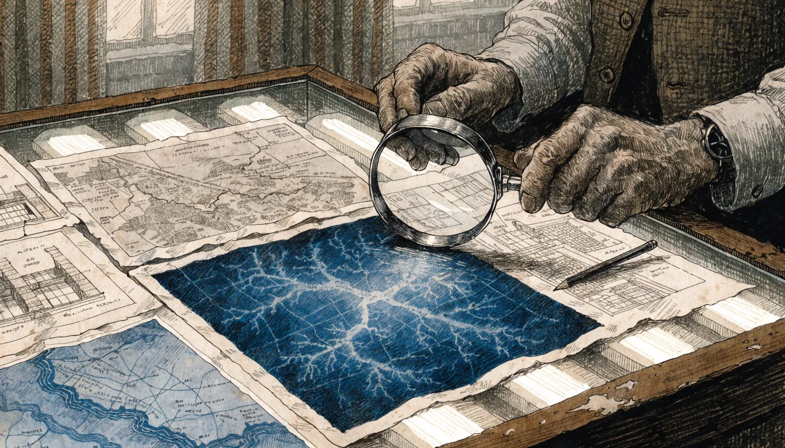
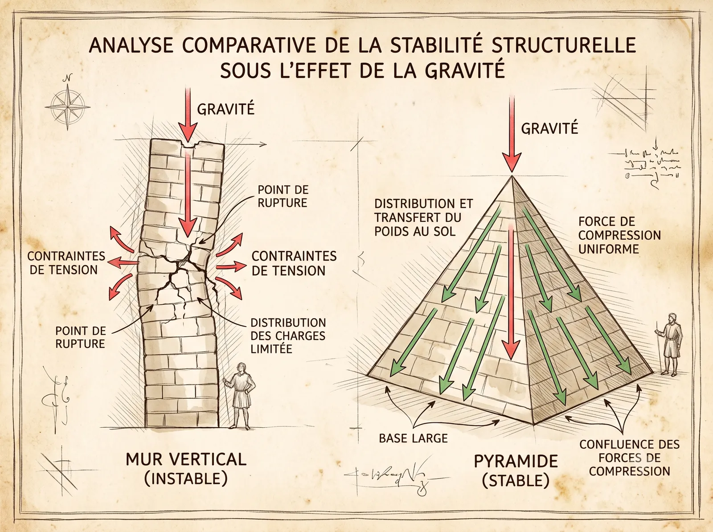
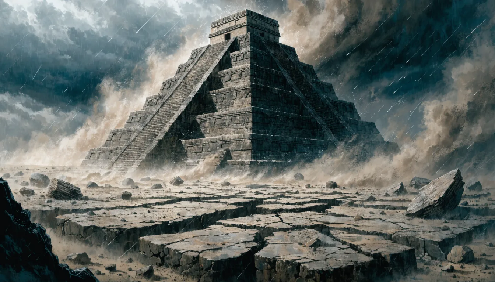
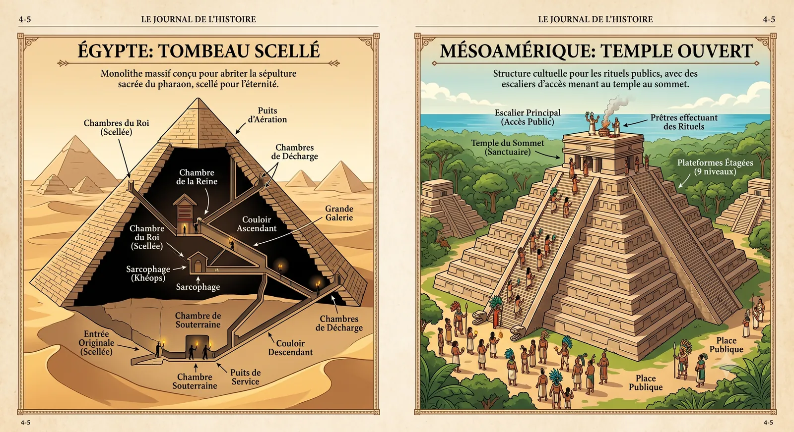

Etiquetas: Egipto antiguo, Pseudoarqueología, Historia
La fascinación magnética de las pirámides
Tags: Ancient Egypt, Pseudo-archaeology, History
The magnetic fascination of pyramids
Depuis des millénaires, les pyramides captivent l’humanité. De Gizeh à Teotihuacán, ces monuments de pierre défient le temps et nourrissent notre imagination. Pourtant, cette admiration légitime a donné naissance à des théories « alternatives » aussi séduisantes qu’infondées. Sur les réseaux sociaux, des influenceurs comme Marita Rojas ou Graham Hancock affirment l’existence d’une « civilisation mère » disparue, ou même d’une intervention extraterrestre, pour expliquer les similitudes entre les pyramides des différents continents.
Desde hace milenios, las pirámides cautivan a la humanidad. De Guiza a Teotihuacán, estos monumentos de piedra desafían el tiempo y alimentan nuestra imaginación. Sin embargo, esta admiración legítima ha dado origen a teorías "alternativas" tan atractivas como infundadas. En las redes sociales, influencers como Marita Rojas o Graham Hancock afirman la existencia de una "civilización madre" desaparecida, o incluso de una intervención extraterrestre, para explicar las similitudes entre las pirámides de los diferentes continentes.
For millennia, pyramids have captivated humanity. From Giza to Teotihuacan, these stone monuments defy time and feed our imagination. However, this legitimate admiration has given rise to "alternative" theories that are as appealing as they are groundless. On social media, influencers like Marita Rojas or Graham Hancock claim the existence of a lost "mother civilization," or even extraterrestrial intervention, to explain the similarities between pyramids on different continents.

L'investigation scientifique dissipe les théories alternatives
La réalité est bien plus fascinante. Grâce à des découvertes récentes, comme celle de la branche d’Ahramat — un ancien bras du Nil identifié par des levés géophysiques, des données satellitaires radar et des carottages profonds —, la science éclaire ces mystères par des explications tangibles. Ces avancées montrent que les pyramides sont le fruit d’une adaptation humaine brillante, et non d’un héritage commun imaginaire.
La realidad es mucho más fascinante. Gracias a descubrimientos recientes, como el del brazo de Ahramat —un antiguo brazo del Nilo identificado por levantamientos geofísicos, datos satelitales de radar y perforaciones profundas—, la ciencia esclarece estos misterios con explicaciones tangibles. Estos avances demuestran que las pirámides son el fruto de una brillante adaptación humana, y no de una herencia común imaginaria.
The reality is far more fascinating. Thanks to recent discoveries, such as that of the Ahramat branch —a former branch of the Nile identified by geophysical surveys, satellite radar data, and deep soil coring—, science sheds light on these mysteries with tangible explanations. These advances show that the pyramids are the result of brilliant human adaptation, and not of an imaginary shared heritage.
« La curiosité humaine face à l’invisible est le moteur de la découverte, mais lorsqu’elle ignore la méthode scientifique, elle devient le terreau des mythologies modernes. »
«La curiosidad humana ante lo invisible es el motor del descubrimiento, pero cuando ignora el método científico, se convierte en el terreno de cultivo de las mitologías modernas.»
“Human curiosity in the face of the invisible is the engine of discovery, but when it ignores scientific method, it becomes the breeding ground for modern mythologies.”
1. La physique de la gravité : L’évolution convergente des formes
1. La física de la gravedad: La evolución convergente de las formas
1. The Physics of Gravity: The Convergent Evolution of Forms

La géométrie stable de la pyramide
Pourquoi des cultures sans lien ont-elles construit des pyramides ? La réponse ne réside pas dans un complot mondial, mais dans les lois de la physique et un phénomène bien documenté : l’évolution convergente. Ce concept, emprunté à la biologie, désigne l’apparition indépendante de solutions similaires face à des défis identiques. En architecture, cela signifie que des sociétés éloignées ont pu développer des formes pyramidales pour répondre aux mêmes contraintes techniques.
¿Por qué culturas sin ningún vínculo construyeron pirámides? La respuesta no reside en un complot mundial, sino en las leyes de la física y en un fenómeno bien documentado: la evolución convergente. Este concepto, tomado de la biología, designa la aparición independiente de soluciones similares ante desafíos idénticos. En arquitectura, esto significa que sociedades lejanas pudieron desarrollar formas piramidales para responder a las mismas limitaciones técnicas.
Why did unrelated cultures build pyramids? The answer does not lie in a global conspiracy, but in the laws of physics and a well-documented phenomenon: convergent evolution. This concept, borrowed from biology, refers to the independent appearance of similar solutions to identical challenges. In architecture, this means that distant societies were able to develop pyramidal shapes to meet the same technical constraints.

Résistance naturelle face à la gravité
À l’âge du bronze, bâtir en hauteur sans que la structure ne s’effondre était un défi de taille. La pyramide, avec sa base large et son sommet effilé, offre la solution la plus stable au monde pour répartir une masse colossale. Trois principes physiques expliquent cette forme universelle :
En la Edad del Bronce, construir en altura sin que la estructura se derrumbara era un desafío enorme. La pirámide, con su base ancha y su cúspide afilada, ofrece la solución más estable del mundo para distribuir una masa colosal. Tres principios físicos explican esta forma universal:
In the Bronze Age, building in height without the structure collapsing was a major challenge. The pyramid, with its wide base and tapered top, offers the most stable solution in the world to distribute a colossal mass. Three physical principles explain this universal shape:
La gravité : Réduire le poids au sommet évite l’écrasement de la base.
La stabilité : Une assise large résiste aux séismes, à l’érosion et au basculement.
Les matériaux : Sans acier ni béton, la pyramide permet d’empiler des tonnes de pierre en toute sécurité.
La gravedad : Reducir el peso en la cima evita el aplastamiento de la base.
La estabilidad : Una base ancha resiste los sismos, la erosión y el vuelco.
Los materiales : Sin acero ni concreto, la pirámide permite apilar toneladas de piedra con total seguridad.
Gravity : Reducing weight at the top prevents the base from crushing.
Stability : A wide base resists earthquakes, erosion, and tipping.
Materials : Without steel or concrete, the pyramid allows tons of stone to be stacked safely.
Cette convergence illustre le génie humain : des solutions analogues, mais indépendantes, émergent face à des problèmes communs.
Esta convergencia ilustre el ingenio humano: soluciones análogas, pero independientes, surgen ante problemas comunes.
This convergence illustrates human genius: analogous but independent solutions emerge when facing common problems.
2. Tombeaux contre temples : Des fonctions radicalement différentes
2. Tumbas contra templos: Funciones radicalmente diferentes
2. Tombs vs. Temples: Radically Different Functions

Différence fonctionnelle : Tombeaux fermés vs Temples ouverts
Si les pyramides partagent une silhouette commune, leurs rôles et leurs contexte culturels révèlent des visions du monde opposées.
Aunque las pirámides comparten una silueta común, sus roles y sus contextos culturales revelan visiones del mundo opuestas.
While pyramids share a common silhouette, their roles and cultural contexts reveal opposing worldviews.
Les pyramides égyptiennes : des nécropoles royales
Las pirámides egipcias: necrópolis reales
Egyptian Pyramids: Royal Necropolises
La branche d'Ahramat comme autoroute logistique
En Égypte, ces monuments étaient des tombeaux scellés, conçus pour garantir au pharaon une vie éternelle dans l’au-delà. La découverte de la branche d’Ahramat — un ancien bras du Nil long de 64 km, large de 200 à 700 mètres (jusqu’à 1 km par endroits) et profond de 2 à 8 mètres (voire 25 m à certains points) — a révolutionné notre compréhension de leur construction. Active pendant la période humide africaine (12 500 à 3 000 av. J.-C.), cette voie d’eau servait d’« autoroute logistique » : les temples de la vallée fonctionnaient comme des ports pour acheminer les matériaux et les ouvriers. Son ensablement, causé par une sécheresse sévère et des tempêtes de sable, a marqué la fin de son utilisation. Les Égyptiens ont également utilisé des techniques ingénieuses pour faciliter le transport : humidification du sable pour réduire les frottements, et systèmes de rampes pour hisser les blocs. Ces méthodes, combinées à l’exploitation du Nil, témoignent d’une maîtrise avancée des principes physiques.
En Egipto, estos monumentos eran tumbas selladas, diseñadas para garantizar al faraón una vida eterna en el más allá. El descubrimiento del brazo de Ahramat —un antiguo brazo del Nilo de 64 km de largo, entre 200 y 700 metros de ancho (hasta 1 km en algunos puntos) y de 2 a 8 metros de profundidad (incluso 25 m en ciertas zonas)— revolucionó nuestra comprensión de su construcción. Activa durante el período húmedo africano (12 500 a 3 000 a.C.), esta vía fluvial servía de "autopista logística": los templos del valle funcionaban como puertos para transportar los materiales y a los trabajadores. Su obstrucción, causada por una sequía severa y tormentas de arena, marcó el fin de su uso. Los egipcios también utilizaron técnicas ingeniosas para facilitar el transporte: humidificación de la arena para reducir la fricción, y sistemas de rampas para izar los bloques. Estos métodos, combinados con la explotación del Nilo, atestiguan un dominio avanzado de los principios físicos.
In Egypt, these monuments were sealed tombs, designed to guarantee the pharaoh eternal life in the afterlife. The discovery of the Ahramat branch —a former branch of the Nile 64 km long, 200 to 700 meters wide (up to 1 km in places), and 2 to 8 meters deep (even 25 m at some points)— revolutionized our understanding of their construction. Active during the African Humid Period (12,500 to 3,000 BC), this waterway served as a "logistics highway": valley temples functioned as ports to transport materials and workers. Its silting up, caused by a severe drought and sandstorms, marked the end of its use. The Egyptians also used ingenious techniques to facilitate transport: dampening the sand to reduce friction, and ramp systems to hoist the blocks. These methods, combined with the exploitation of the Nile, bear witness to an advanced mastery of physical principles.
Les pyramides mésoaméricaines : des lieux de culte publics
Las pirámides mesoamericanas: lugares de culto públicos
Mesoamerican Pyramids: Public Places of Worship
Les temples ouverts de Mésoamérique
À l’inverse, les pyramides de Mésoamérique, comme celles de Teotihuacán, étaient des temples ouverts, situés au cœur de cités densément peuplées. Leur sommet plat supportait des sanctuaires dédiés aux dieux, et leurs escaliers extérieurs monumentaux permettaient un accès public. Contrairement aux pyramides égyptiennes — aux faces lisses et peu décorées —, celles de Mésoamérique étaient souvent peintes et ornées, reflétant une fonction rituelle et politique marquée.
Por el contrario, las pirámides de Mesoamérica, como las de Teotihuacán, eran templos abiertos, situados en el corazón de ciudades densamente pobladas. Su cima plana sostenía santuarios dedicados a los dioses, y sus escaleras exteriores monumentales permitían el acceso público. A diferencia de las pirámides egipcias —de caras lisas y poco decoradas—, las de Mesoamérica a menudo estaban pintadas y decoradas, reflejando una marcada función ritual y política.
Conversely, Mesoamerican pyramids, like those of Teotihuacan, were open temples, located in the heart of densely populated cities. Their flat top supported shrines dedicated to the gods, and their monumental exterior staircases allowed public access. Unlike Egyptian pyramids —with smooth faces and little decoration—, those of Mesoamerica were often painted and decorated, reflecting a strong ritual and political function.
Caractéristique
Pyramides d’Égypte
Pyramides de Mésoamérique
Fonction principale
Tombes royales (culte des morts)
Temples et plateformes rituelles
Accès
Privé, galeries étroites et fermées
Public, escaliers extérieurs monumentaux
Localisation
Bord de fleuve (branche d’Ahramat)
Centres urbains et places publiques
Forme architecturale
Faces lisses, sommet pointu
Forme étagée, sommet plat avec temple
Décoration
Peu ou pas décorées
Souvent peintes et décorées
Méthode de construction
Transport par voie fluviale, rampes, sable humidifié
Techniques locales, pierre taillée
Période de construction
Ancien Empire (2600–2500 av. J.-C.)
Principalement à partir du Ier millénaire av. J.-C.
Caractéristique
Pyramides d’Égypte
Pyramides de Mésoamérique
Fonction principale
Tombes royales (culte des morts)
Temples et plateformes rituelles
Accès
Privé, galeries étroites et fermées
Public, escaliers extérieurs monumentaux
Localisation
Bord de fleuve (branche d’Ahramat)
Centres urbains et places publiques
Forme architecturale
Faces lisses, sommet pointu
Forme étagée, sommet plat avec temple
Décoration
Peu ou pas décorées
Souvent peintes et décorées
Méthode de construction
Transport par voie fluviale, rampes, sable humidifié
Techniques locales, pierre taillée
Période de construction
Ancien Empire (2600–2500 av. J.-C.)
Principalement à partir du Ier millénaire av. J.-C.
Caractéristique
Pyramides d’Égypte
Pyramides de Mésoamérique
Fonction principale
Tombes royales (culte des morts)
Temples et plateformes rituelles
Accès
Privé, galeries étroites et fermées
Public, escaliers extérieurs monumentaux
Localisation
Bord de fleuve (branche d’Ahramat)
Centres urbains et places publiques
Forme architecturale
Faces lisses, sommet pointu
Forme étagée, sommet plat avec temple
Décoration
Peu ou pas décorées
Souvent peintes et décorées
Méthode de construction
Transport par voie fluviale, rampes, sable humidifié
Techniques locales, pierre taillée
Période de construction
Ancien Empire (2600–2500 av. J.-C.)
Principalement à partir du Ier millénaire av. J.-C.
3. Les dérives de la pseudo-archéologie : L’insulte au génie humain
3. Las derivas de la pseudoarqueología: El insulto al ingenio humano
3. The Pitfalls of Pseudo-Archaeology: An Insult to Human Genius
La théorie d’une « civilisation mère » est une insulte à l’intelligence des peuples anciens. Nier que les Égyptiens ou les Mayas aient pu inventer leurs propres techniques, c’est refuser de reconnaître leur capacité à dompter leur environnement. Les Égyptiens, par exemple, ont exploité les bras du Nil comme des autoroutes fluviales pour bâtir leurs monuments, prouvant une organisation logistique sophistiquée.
La teoría de una "civilización madre" es un insulto a la inteligencia de los pueblos antiguos. Negar que los egipcios o los mayas hayan podido inventar sus propias técnicas es negarse a reconocer su capacidad para dominar su entorno. Los egipcios, por ejemplo, explotaron los brazos del Nilo como autopistas fluviales para construir sus monumentos, demostrando una organización logística sofisticada.
The theory of a "mother civilization" is an insult to the intelligence of ancient peoples. To deny that the Egyptians or the Mayans were able to invent their own techniques is to refuse to recognize their capacity to tame their environment. The Egyptians, for example, exploited the branches of the Nile as river highways to build their monuments, proving a sophisticated logistical organization.
La démarche scientifique vs l'archéologie romantique
Pourtant, comme le souligne l’expert Jean-Loïc Le Quellec, le debunking rationnel a ses limites : ces théories ne relèvent pas de la mauvaise science, mais de mythologies modernes. Leurs partisans, comme Graham Hancock, s’appuient sur des interprétations hasardeuses de sites comme Göbekli Tepe ou Cholula, ou sur des corrélations non fondées entre des monuments éloignés. Ces récits, qualifiés d’« archéologie romantique », répondent à un besoin de mystère plutôt qu’à une démarche rigoureuse.
Sin embargo, como señala el experto Jean-Loïc Le Quellec, el debunking racional tiene sus límites: estas teorías no son mala ciencia, sino mitologías modernas. Sus partidarios, como Graham Hancock, se apoyan en interpretaciones dudosas de sitios como Göbekli Tepe o Cholula, o en correlaciones sin fundamento entre monumentos lejanos. Estos relatos, calificados de "arqueología romántica", responden a una necesidad de misterio más que a un método riguroso.
However, as expert Jean-Loïc Le Quellec points out, rational debunking has its limits: these theories are not bad science, but modern mythologies. Their supporters, like Graham Hancock, rely on haphazard interpretations of sites like Göbekli Tepe or Cholula, or on unfounded correlations between distant monuments. These stories, described as "romantic archaeology," respond to a need for mystery rather than a rigorous approach.
La communauté scientifique insiste : sans preuves vérifiables et sans méthodologie solide, ces hypothèses ne résistent pas à l’analyse. Leur persistance dans la culture populaire montre cependant l’attrait pour des explications simplistes et globales… au détriment de la richesse de la réalité.
La comunidad científica insiste: sin pruebas verificables y sin una metodología sólida, estas hipótesis no resisten el análisis. Sin embargo, su persistencia en la cultura popular demuestra la atracción por explicaciones simplistas y globales... en detrimento de la riqueza de la realidad.
The scientific community insists: without verifiable evidence and a solid methodology, these hypotheses do not withstand analysis. Their persistence in popular culture shows the appeal of simplistic and global explanations... to the detriment of the richness of reality.
4. Conclusion : La réalité est plus fascinante que la fiction
4. Conclusión: La realidad es más fascinante que la ficción
4. Conclusion: Reality is More Fascinating Than Fiction
La science ne supprime pas le mystère : elle le rend réel, et souvent plus impressionnant. La découverte de la branche d’Ahramat prouve que les pyramides sont le résultat d’une adaptation humaine brillante au climat, à la géographie et aux contraintes techniques. Les similitudes entre les monuments des différents continents s’expliquent par l’évolution convergente, et non par une origine commune fantasmée.
La ciencia no suprime el misterio: lo hace real y, a menudo, más impresionante. El descubrimiento del brazo de Ahramat demuestra que las pirámides son el resultado de una brillante adaptación humana al clima, a la geografía y a las limitaciones técnicas. Las similitudes entre los monumentos de los diferentes continentes se explican por la evolución convergente y no por un origen común imaginado.
Science does not eliminate mystery: it makes it real, and often more impressive. The discovery of the Ahramat branch proves that the pyramids are the result of a bright human adaptation to climate, geography, and technical constraints. The similarities between monuments on different continents are explained by convergent evolution, and not by a fantasized common origin.
La réalité archéologique — faite d’efforts humains, de changements climatiques et d’innovations — est bien plus riche que les fantasmes ésotériques. Protéger notre patrimoine, c’est respecter la diversité du génie humain, plutôt que de chercher une connexion globale imaginaire. Les pyramides, qu’elles soient égyptiennes ou mésoaméricaines, sont avant tout le témoignage de l’ingéniosité de celles et ceux qui les ont conçues. Et cela, c’est bien plus fascinant que n’importe quel mythe.
La realidad arqueológica —hecha de esfuerzos humanos, cambios climáticos e innovaciones— es mucho más rica que las fantasías esotéricas. Proteger nuestro patrimonio es respetar la diversidad del ingenio humano, en lugar de buscar una conexión global imaginaria. Las pirámides, sean egipcias o mesoamericanas, son ante todo el testimonio del ingenio de quienes las diseñaron. Y eso es mucho más fascinante que cualquier mito.
The archaeological reality —made of human effort, climate change, and innovation— is far richer than esoteric fantasies. Protecting our heritage means respecting the diversity of human genius, rather than searching for an imaginary global connection. Pyramids, whether Egyptian or Mesoamerican, are above all the testimony to the ingenuity of those who designed them. And that is far more fascinating than any myth.
📚 Sources & Références Scientifiques
Ghoneim, E. et al. (2024).The Egyptian pyramid chain was built along the now abandoned Ahramat Nile Branch. Nature Communications Earth & Environment. [DOI: 10.1038/s43247-024-01379-7]
Tallet, P. (2017).Les papyrus de la mer Rouge I : Le journal de Merer (Papyrus Jarf A et B). Mémoires de l'IFAO.
Le Quellec, J.-L. (2018).L'Archéologie romantique : sens et vanité du debunking rationnel. Éditions CNRS.
Karbovnik, D. (2017).De l’alterscience au conspirationnisme : le cas de la pseudo-archéologie. Quaderni, 94.
📚 Fuentes & Referencias Científicas
Ghoneim, E. et al. (2024).The Egyptian pyramid chain was built along the now abandoned Ahramat Nile Branch. Nature Communications Earth & Environment. [DOI: 10.1038/s43247-024-01379-7]
Tallet, P. (2017).Les papyrus de la mer Rouge I : Le journal de Merer (Papyrus Jarf A et B). Mémoires de l'IFAO.
Le Quellec, J.-L. (2018).L'Archéologie romantique : sens et vanité du debunking rationnel. Éditions CNRS.
Karbovnik, D. (2017).De l’alterscience au conspirationnisme : le cas de la pseudo-archéologie. Quaderni, 94.
📚 Sources & Scientific References
Ghoneim, E. et al. (2024).The Egyptian pyramid chain was built along the now abandoned Ahramat Nile Branch. Nature Communications Earth & Environment. [DOI: 10.1038/s43247-024-01379-7]
Tallet, P. (2017).Les papyrus de la mer Rouge I : Le journal de Merer (Papyrus Jarf A et B). Mémoires de l'IFAO.
Le Quellec, J.-L. (2018).L'Archéologie romantique : sens et vanité du debunking rationnel. Éditions CNRS.
Karbovnik, D. (2017).De l’alterscience au conspirationnisme : le cas de la pseudo-archéologie. Quaderni, 94.